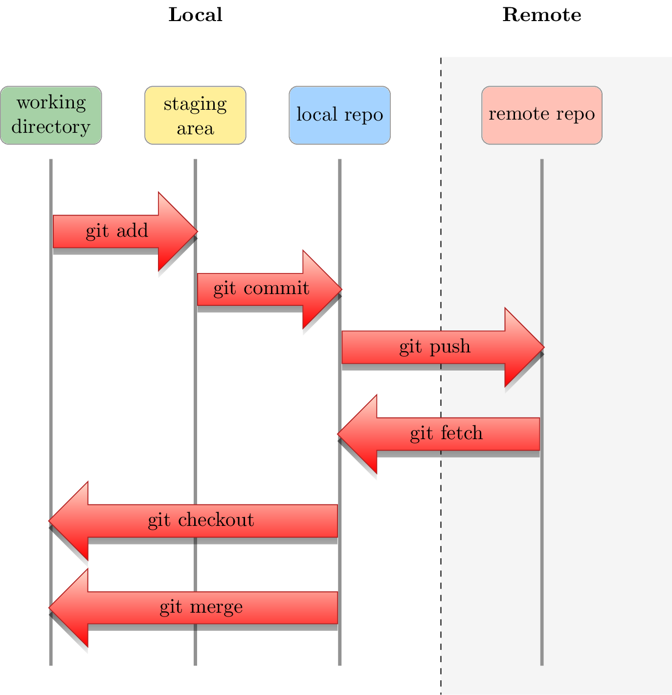

\documentclass[svgnames]{standalone}
\usepackage{tikz}
\usetikzlibrary{calc,fadings,shapes.arrows,shadows,backgrounds, positioning}
\tikzset{bubble/.style={rectangle, draw=gray,rounded corners,fill=#1,align = flush center,minimum height=1cm,minimum width=1.75cm}}
\tikzfading [name=arrowfading, top color=transparent!0, bottom color=transparent!95]
\tikzset{arrowfill/.style={top color=OrangeRed!20, bottom color=Red, general shadow={fill=black, shadow yshift=-0.8ex, path fading=arrowfading}}}
\tikzset{arrowstyle/.style={draw=FireBrick,arrowfill, single arrow,minimum height=#1, single arrow,
single arrow head extend=.4cm,}}
\begin{document}
\begin{tikzpicture}
% Bubbles
\node[bubble=ForestGreen!40] (wd) at (0,0) {working\\directory};
\node[bubble=Gold!40] (sa) at (2.5,0) {staging\\area};
\node[bubble=DodgerBlue!40] (lc) at (5,0) {local repo};
\node[bubble=Tomato!40] (rc) at (8.5,0) {remote repo};
\node[above= 1 cm of rc,font={\bf}]{Remote};
\node[above= 1 cm of sa,font={\bf}]{Local};
% Lines
\foreach \bubble in {wd,sa,lc,rc}
\draw[ultra thick, gray] ($(\bubble.south)-(0,0.25)$)--($(\bubble.south)-(0,9)$);
% Arrows
\node [arrowstyle=2.5cm,xshift=-0.1cm,yshift=-1.5cm] at ($(wd.south)!0.5!(sa.south)$) {git add};
\node [arrowstyle=2.5cm,xshift=-0.1cm,yshift=-2.5cm] at ($(sa.south)!0.5!(lc.south)$) {git commit};
\node [arrowstyle=3.5cm,xshift=-0.1cm,yshift=-3.5cm] at ($(lc.south)!0.5!(rc.south)$) {git push};
\node [arrowstyle=3.5cm,xshift=0.1cm,yshift=-5cm,shape border rotate=180] at ($(rc.south)!0.5!(lc.south)$) {git fetch};
\node [arrowstyle=5cm,xshift=0.1cm,yshift=-6.5cm,shape border rotate=180] at ($(lc.south)!0.5!(wd.south)$) {git checkout};
\node [arrowstyle=5cm,xshift=0.1cm,yshift=-8cm,shape border rotate=180] at ($(lc.south)!0.5!(wd.south)$) {git merge};
% Background
\begin{pgfonlayer}{background}
\fill[gray!10]($(lc.north)!0.5!(rc.north)+(0,0.5)$)rectangle($(lc.south)!0.5!(rc.south)+(4,-9.5)$) ;
\draw[dashed, shorten <=-1.5cm] ($(lc.south)!0.5!(rc.south)$)--($(lc.south)!0.5!(rc.south)-(0,9.5)$);
\end{pgfonlayer}
\end{tikzpicture}
\end{document}Created by David Li